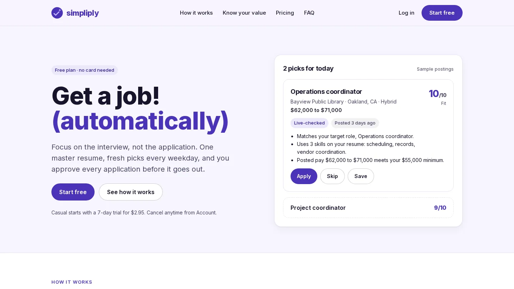
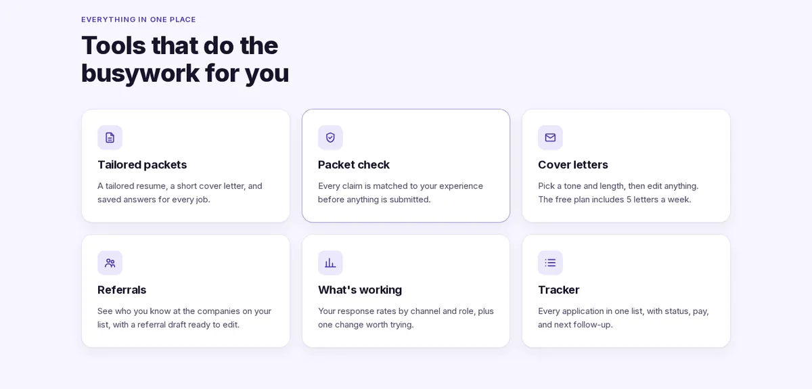
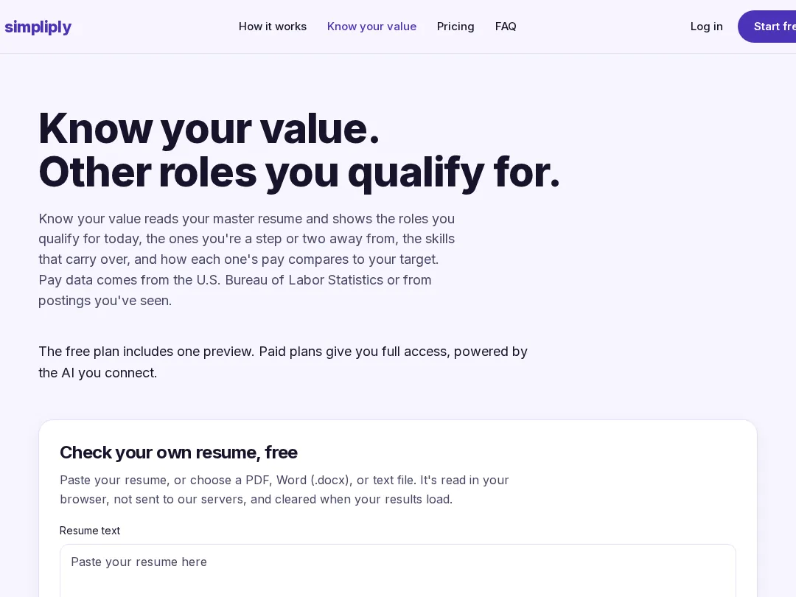
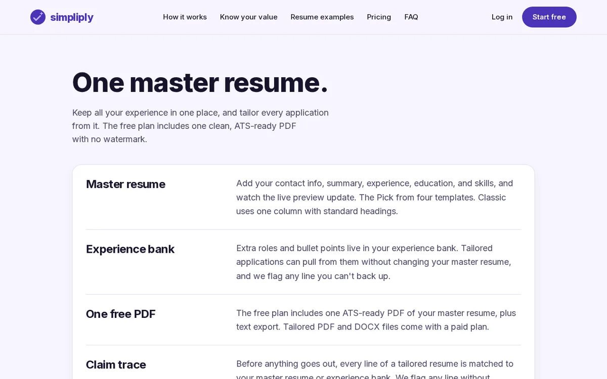
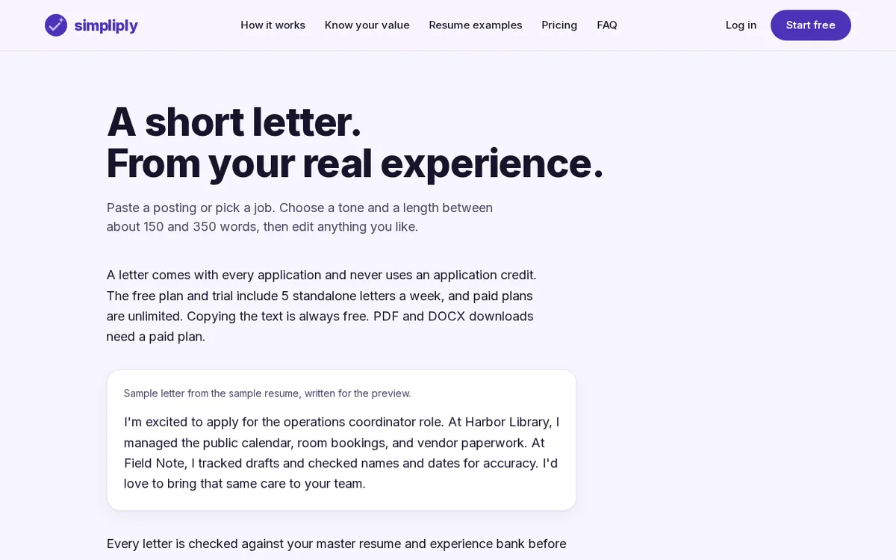

simpliply
A job-hunt subscription I designed, built and launched. One master resume, fresh picks every weekday, and the user approves every application.
- Role
- Founder: product, design and engineering
- Product
- simpliply.io
- Dates
- Nov 2026 to present
- Disciplines
- Product design, Full-stack engineering, Pricing, Payments

The brief
Simpliply is a job-hunt subscription. Users build one master resume, get a short list of live postings that fit their role, pay and location every weekday, and approve each application before it goes out.
Users bring their own AI. They connect Claude, ChatGPT or a local model, by API key or MCP, and their provider bills them directly. I bought simpliply.io on Nov 24, 2026, and the site went live on Nov 25 with Stripe checkout on Cloudflare.
What I did
Master resume
A resume builder with one master resume. Every tailored resume and cover letter starts from it, and every claim is matched to the user’s own experience.
Review-first apply
Nothing is submitted until the user clicks. Auto-apply and LinkedIn messaging are opt-in and run under limits the user sets.
Know your value
Reads a resume, finds the roles a user already qualifies for and the ones a step away, and compares their pay to the user’s target with Bureau of Labor Statistics data.
Cover letters
A cover letter generator with tone and length controls, fully editable.
Plans and credits
Free, Casual, Active and Full search plans with weekly application credits by tier. Checkout and cancellation run through Stripe.
Results
- 4
- plans, from free to $49 a month
- 5 / 10 / 20
- applications a week by tier
- Nov 25, 2026
- live with Stripe checkout



On the site

